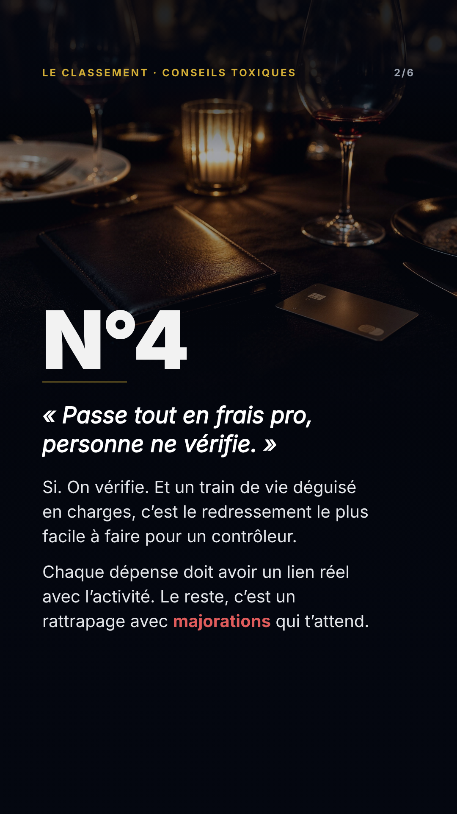
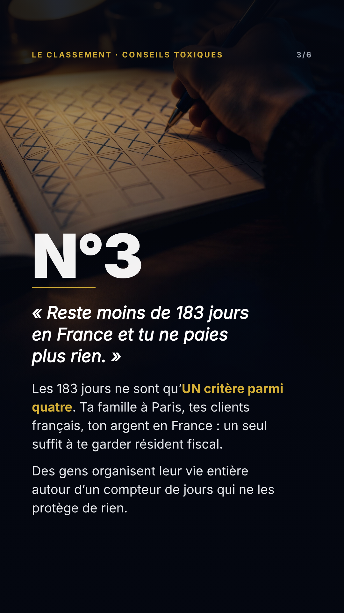

Le classement des pires conseils fiscaux d'Instagram
Les 6 stories dans l'ordre de publication. Même grading, même grille,
même en-tête. Les repères sont posés à l'échelle : aucun texte ne les franchit.
160 px / 1620 px — zones mortes des stickers
706 px — haut du numéro de classement
950 px — limite basse de la story 6
1/6 · Ouverture
texte 160→1620px · AA 7.55:1 · 645 ko

2/6 · N°4
texte 160→1494px · AA 5.61:1 · 1006 ko

3/6 · N°3
texte 160→1620px · AA 7.81:1 · 1172 ko
4/6 · N°2
texte 160→1552px · AA 3.46:1 · 1408 ko
5/6 · N°1
texte 160→1562px · AA 4.28:1 · 926 ko
6/6 · FAQ
texte 160→920px · AA 5.03:1 · 1579 ko